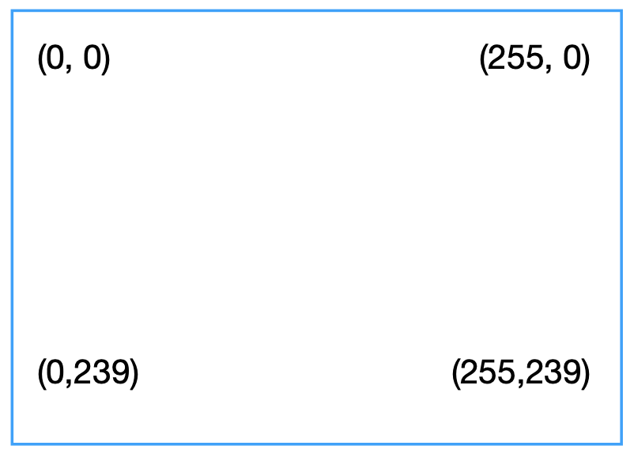

Specifications
1.Memory
QWEN virtual machine had 64KB (65,536 bytes) of RAM. The lowermost 34.816KB are reserved to store font data (4,096 bytes), and video memory (30,720 bytes).
QWEN programs start at location 0x8800.
Memory Map:
0x0000 - 0x87FF: Font data and video RAM
0x8800 - 0xFFFF: Work RAM
2.Register
QWEN has 16 general purpose 8-bit registers named R0 to RF. RF is the carry flag. QWEN also has a 16-bit registers called RI.
This register is used to store memory addresses. There is also the stack pointer (SP) which is used to store return addresses when
subroutines are called. It has the 16-bit program counter (PC) too.
3.The stack
The stack is an array of 64 16-bit values, used to store return address when subroutines are called. The stack pointer (SP) is 16-bit, it
is used to point to the topmost level of the stack.
4.Input
Input with keyboard that has A-Z (Non-case-sensitive), 0-9, +, -, * and /.
5.Graphics
QWEN Display resolution is 256x240 pixels. Its color is 4-bit.
Coordinate system of a screen:

The pixels are bytepacked. Each pixel will contain 4 bit of data. For example, the bit 0b0000 is a single-pixel with a white color.
QWEN can draw graphics on screen with sprites too. A sprite is a group of byte which represent a picture. QWEN sprites can be up to 128 bytes, for
a posible sprite size of 16x16 pixels.
6.Sound
Sound will be played with an instruction. QWEN supports the notes of the scale C, D, E, F, G, A, B and C (higher).